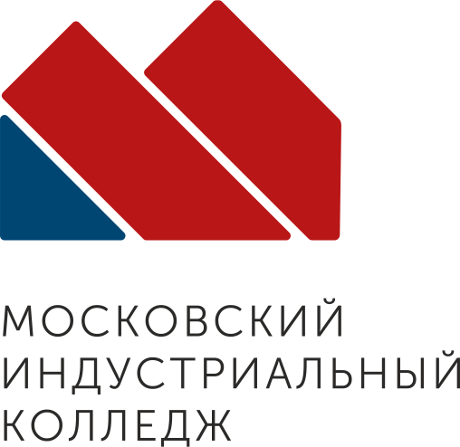

На компьютере или телефоне
Откройте павильон. Поворачивайте камеру мышью или пальцем. Выбирайте экспонаты внизу экрана.

АТЛАСВИРТУАЛЬНЫЙ ПАВИЛЬОН МИКБудущее, которое
когда-то представляли.
Шагните в мир больших идей.
Монументальная архитектура, энергия атома
и инженерная мечта советской эпохи.
В БРАУЗЕРЕ ИЛИ В VR · БЕЗ УСТАНОВКИ
Павильон ждёт ваш импульс. Настройте четыре станции, соберите энергию идей и пробудите сердце Атласа.
Мышь, касание или VR-контроллеры. Есть спокойный режим.
Необычный взгляд на знакомую эпоху.
Пройдите от монументального искусства
к технологиям, изменившим мир.
Поверните скульптуру. Рассмотрите следы поверхности и работу с объёмом. В отдельном пространстве ничто не отвлекает от самого экспоната.
Вращение · Приближение · Сохранение видаКак искусство, наука и инженерия создают образ будущего? Рассмотрите четыре экспоната и найдите свой ответ.
Настраиваем свет. Готовим экспонаты.
Потяните экран для обзора · WASD для движения · 1–4 для выбора объекта
Потяните для поворота · Колесо мыши или два пальца для приближения